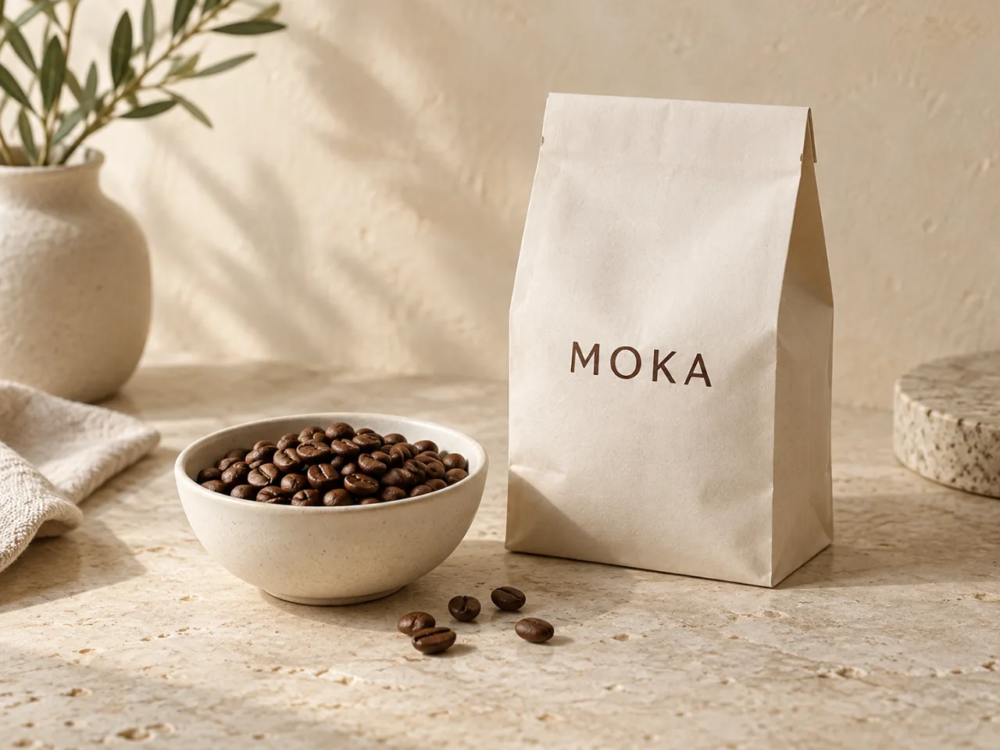
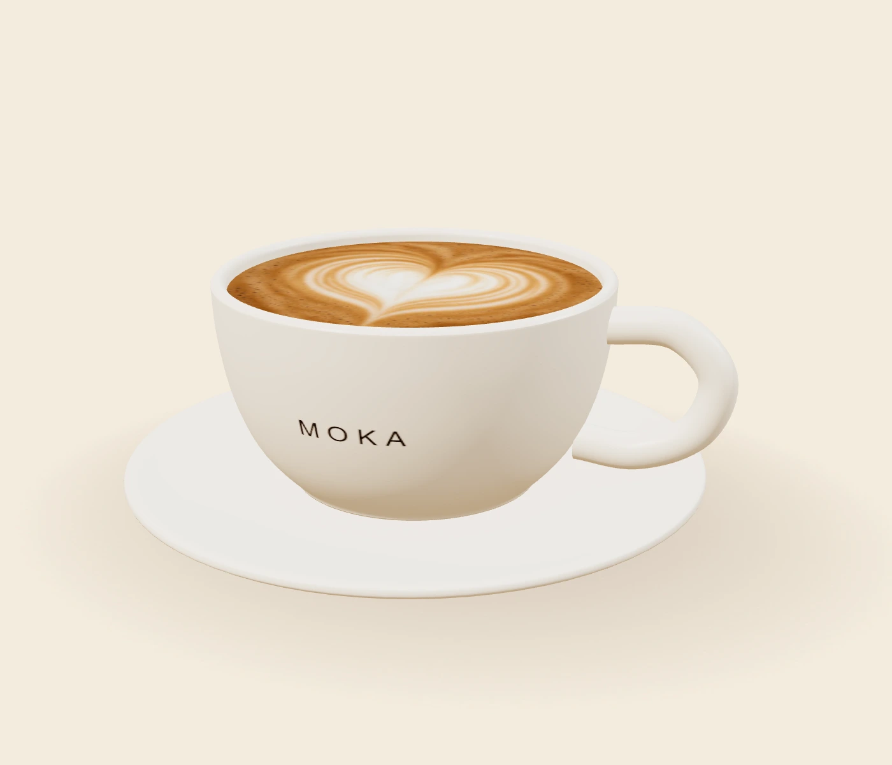
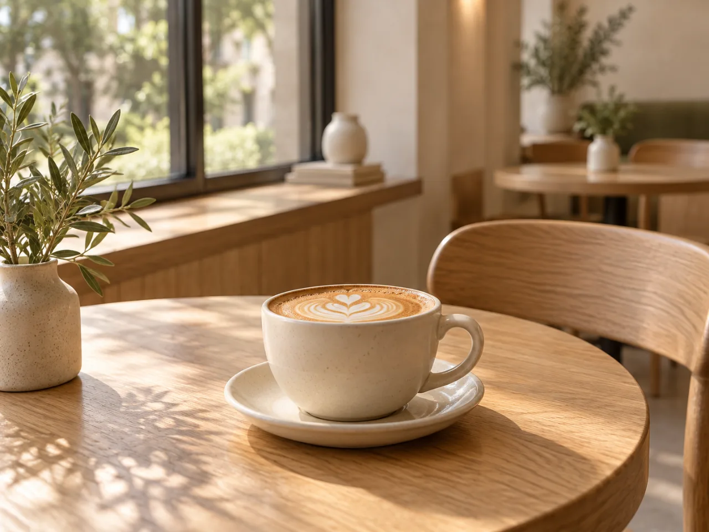
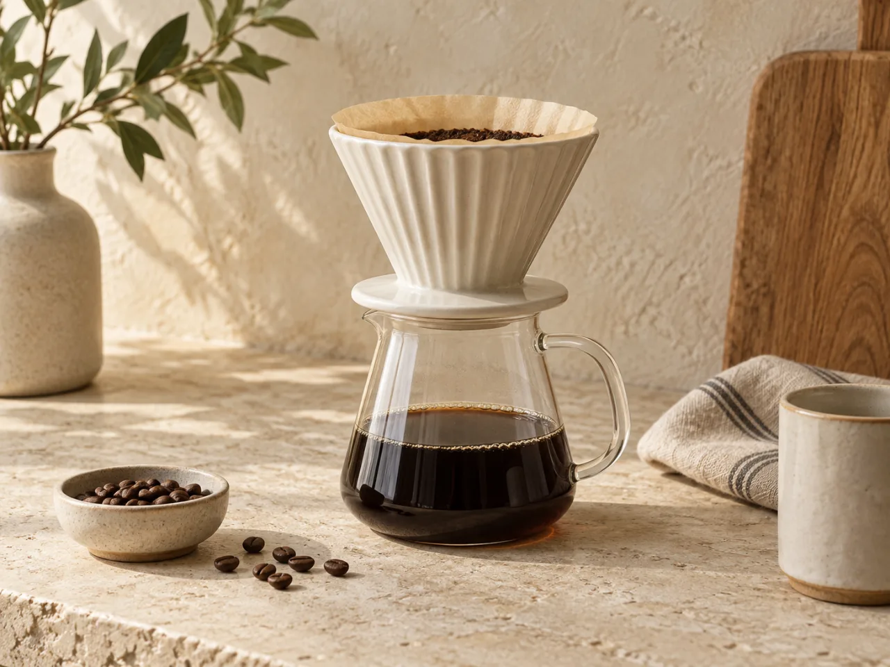
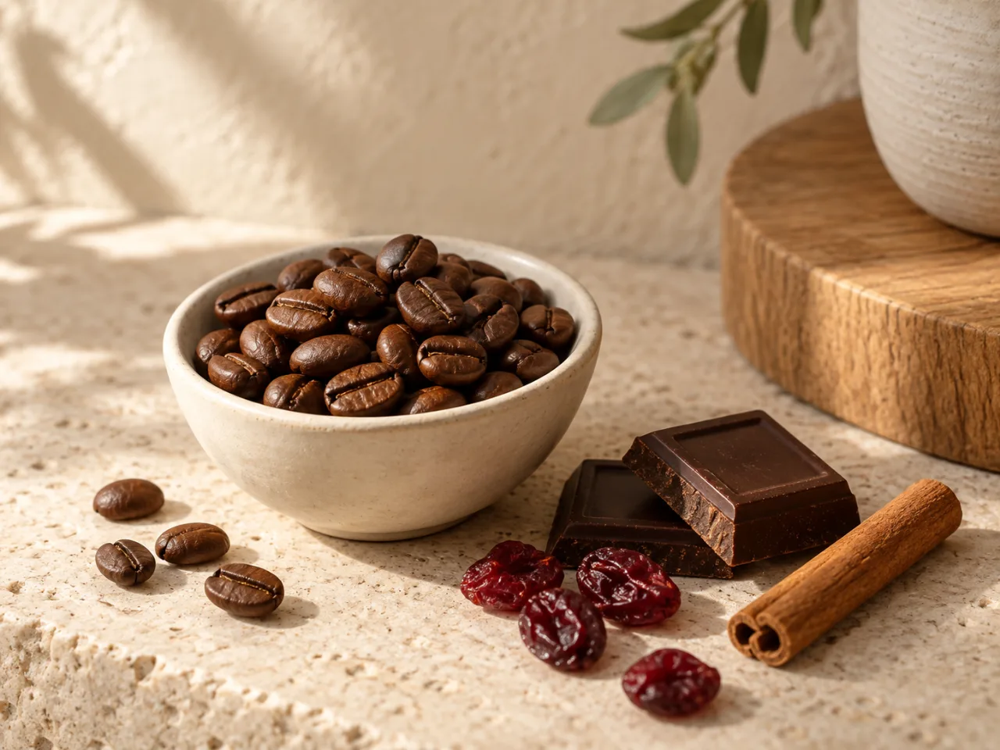
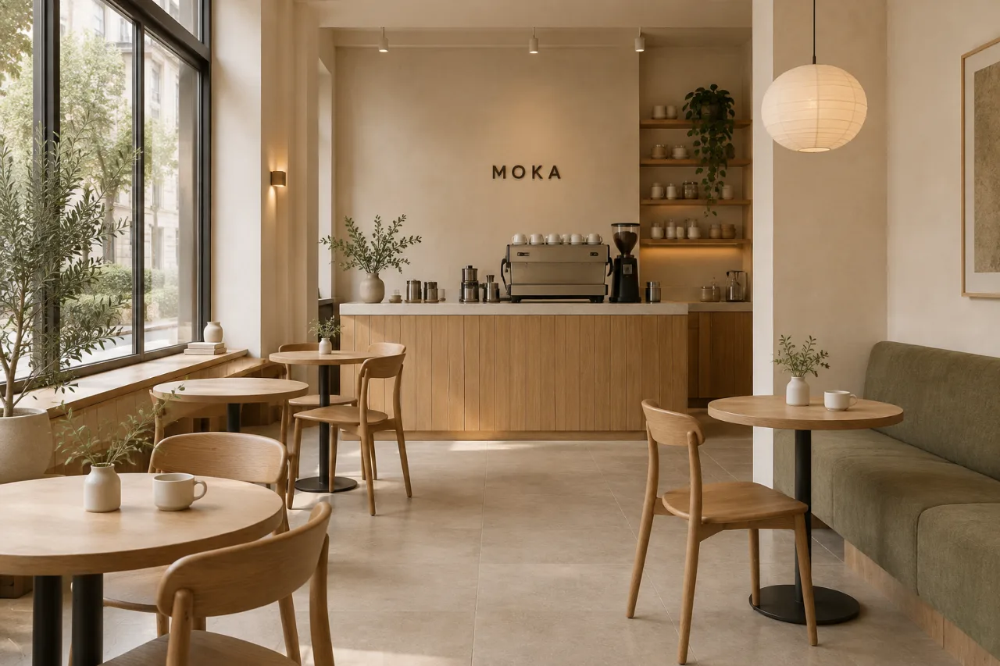

01
Баланс
Шоколад · орех · карамель
Плотный, округлый профиль для эспрессо и напитков с молоком.
Найти в менюКофе. Пространство. Пауза.
Загляните за привычным капучино, попробуйте фильтр и найдите минуту для себя.
Для вашего маленького перерыва


01 / О MOKA
MOKA начинается с простых вещей: хорошего зерна, тёплой чашки и внимания к вкусу. Здесь не нужно разбираться в сложных терминах — достаточно выбрать то, что нравится, или открыть для себя что-то новое.
Мы задумали пространство для короткой остановки посреди дня. Свет у окна, спокойные материалы и кофе, за которым хочется задержаться. Наедине с собой или за разговором — в своём ритме.
02 / Наш кофе
Знакомые ноты и новые сочетания.
Найдите настроение своей чашки.

Шоколад · орех · карамель
Плотный, округлый профиль для эспрессо и напитков с молоком.
Найти в меню
Цитрус · чай · лёгкая сладость
Прозрачный вкус и деликатное послевкусие. Хорош сам по себе.
Найти в меню
Ягоды · какао · специи
Немного любопытства в привычном кофейном ритуале.
Найти в менюВкусовые профили — часть концепции, не описание конкретной партии зерна.
04 / Атмосфера
Мягкий свет. Тёплое дерево.
Место для своего ритма.

Из них складывается настроение.
05 / До встречи
На один эспрессо.
Или чуть подольше.
Адрес и контакты будут указаны для реальной кофейни.
Пример расписания для концепции.
{kind=link}
{kind=link}
{kind=link}
{kind=link}
{kind=link}
{kind=link}
{kind=link}
{kind=link}
{kind=link}
{kind=link}
{kind=link}
{kind=link}
{kind=link}
{kind=link}
{kind=link}